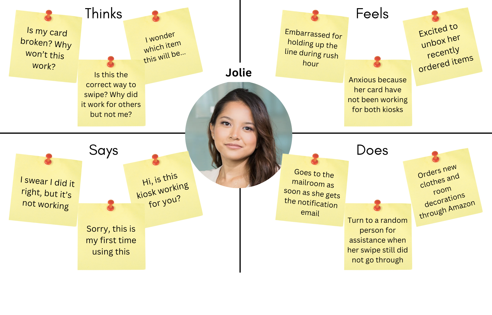
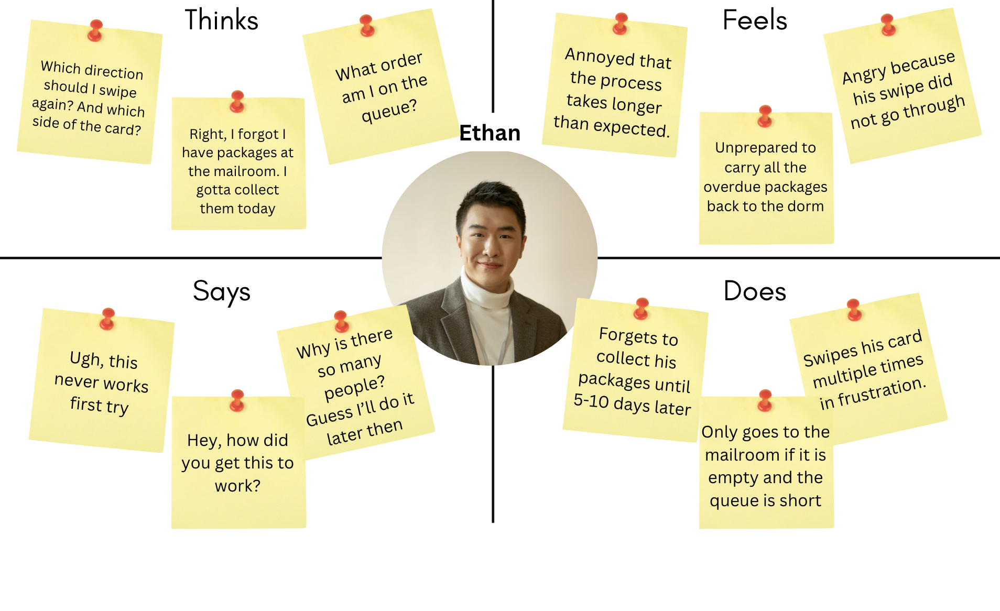

What are the reasons for you to use this interface?
To get packages and mail
How easy or difficult was it to complete your task using the kiosk?
Overall, the process is straightforward once you’re familiar with it, but there are usually technical glitches—like the card reader failing to recognize my ID
Were there any moments when you felt unsure about what to do next? If so, can you describe them?
When the card swipe does not go through, I would assume that the kiosk was unusable and go to a different kiosk. For the first few times retrieving my package, this really confused me.
How do you feel about the response time of the kiosk (e.g., card scanning, screen transitions)?
Good timing if the card works, but can be slightly slow during transitions between the swiping screen and the package retrieval screen.
Have you ever encountered an issue where the kiosk didn’t work as expected? If yes, what happened, and how did you resolve it?
I will usually try other ways, including trying to swipe in the other direction, switch kiosks, or ask for help from a friend.
What, if anything, frustrates you about using this kiosk?
When it doesn’t read the cards correctly, especially when I’m in a hurry. It also feels outdated compared to app-based or contactless systems out there.
If you could change one thing about the kiosk to improve your experience, what would it be?
For the card reader to register swipes better.
Is there any feature or function you wish this kiosk had?
An alternative way to swiping (e.g. scanning), or an option to schedule to receive packages after some time (ex. 5 mins, 1 hour).

Jolie is an eager online shopper who gets excited whenever she receives a package notification. As soon as she gets the email, she heads straight to the mailroom. She is also a new student at Brown, and is not too familiar with the kiosk system here.

Ethan is a busy college student who often forgets about his packages until they start piling up at the mailroom. He gets annoyed by how long it takes and struggles with swiping his card correctly. If the mailroom is too crowded, he just leaves and decides to try again another day—even if it means delaying picking up important items.